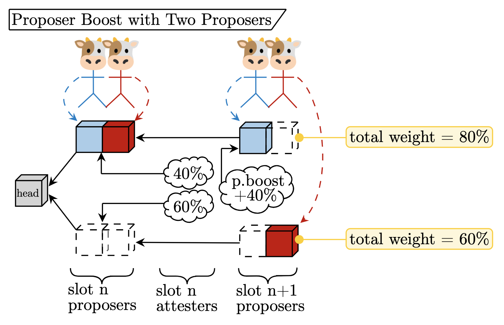

writing (articles)
by category:- MEV + relays * Bid cancellations considered harmful * Optimistic relays and where to find them * An Optimistic Weekend * Towards ePBS an Optimistic Roadmap * Optimistic Relay Proposal + enshrined Proposer-Builder Separation * Consider the ePBS * ePBS – the infinite buffet * Relays in a post-ePBS world * Payload-Timeliness Committees * Why Enshrine Proposer-Builder Separation? * Equivocation Attacks in mev-boost and ePBS + censorship resistance * EIP-7547 * The case for ILECTRA * Inclusion Lists PoC Specification * Inclusion lists: execution, consensus, & engine spec overview * Unconditional Inclusion Lists * Resistance is not futile; CR in mev-boost * No free lunch – a new inclusion list design + misc. * Mechan-stein * On block-space distribution mechanisms * Execution Tickets * Timing Games – implications and possible mitigations * dr. changestuff or: how i learned to stop worrying and love mev-burn - proof-of-stake + `ETH` the asset * Issuance Issues — Initial Issue * Issuance Issues — Subsequent Soliloquy * Issuance Issues — Tertiary Treatise * My (e)thesis: settlement, data availability, execution — in that order. + ethereum consensus * Concurrent Block Proposers in Ethereum * Rollup-centric roadmap, 2024 version * A set-theoretic view of Ethereum coteries * Time, Slots, and the ordering of events in Ethereum Proof-of-Stake + exit/withdrawal queues * EIP-7922 * ELI5: Ethereum Validator Exits * Adding flexibility to Ethereum's exit queue + EIP-7251; MAX_EFFECTIVE_BALANCE * EIP-7251 * MAXEB Consolidation * Slashing penalty analysis – EIP-7251 * EIP-7251 FAQ * Increase the MAX_EFFECTIVE_BALANCE – a modest proposal + liquid staking/restaking * The risks of LRTs * Magnitude and direction of Lido attack vectors * Can we find Goldilocks? Musings on “two-tiered” staking, a native Liquid Staking Token design - misc + On 0x3d84 + Solo staking rig + Implementing Iterative Mixed Refinement in STRUMPACK
==========================================================================================
by year:2025
------------------------------------------------------------------------------------------
→ EIP-7922: Dynamic exit queue rate limit
by Mikhail Kalinin (@mkalinin), Mike Neuder (@michaelneuder), Mallesh Pai (@Mmp610)
https://eips.ethereum.org/EIPS/eip-7922
------------------------------------------------------------------------------------------

→ Adding flexibility to Ethereum's exit queue
by Mike, Mallesh, Mikhail
https://ethresear.ch/t/adding-flexibility-to-ethereums-exit-queue/22061
------------------------------------------------------------------------------------------

→ ELI5: Ethereum Validator Exits
by Mike and Mallesh
https://hackmd.io/@mikeneuder/eli5-ethereum-validator-exits
==========================================================================================
2024

→ My (e)thesis: settlement, data availability, execution — in that order.
by Mike
https://hackmd.io/@mikeneuder/ethesis
------------------------------------------------------------------------------------------
→ Mechan-stein
by Mike
https://ethresear.ch/t/mechan-stein-alt-franken-ism/20321
------------------------------------------------------------------------------------------
→ On block-space distribution mechanisms
by Mike, Pranav, & Tim Roughgarden
https://ethresear.ch/t/on-block-space-distribution-mechanisms/19764
------------------------------------------------------------------------------------------
→ Issuance Issues – Tertiary Treatise
by Mike
https://hackmd.io/@mikeneuder/iitt
------------------------------------------------------------------------------------------
→ Issuance Issues – Subsequent Soliloquy
by Mike
https://notes.ethereum.org/@mikeneuder/subsol
------------------------------------------------------------------------------------------
→ Issuance Issues – Initial Issue
by Mike
https://notes.ethereum.org/@mikeneuder/iiii
------------------------------------------------------------------------------------------
→ The Case for ILECTRA
by Mike
https://notes.ethereum.org/@mikeneuder/the-case-for-ilectra
------------------------------------------------------------------------------------------
→ Inclusion Lists PoC Specification
by Mike
https://notes.ethereum.org/@mikeneuder/il-poc-spec
------------------------------------------------------------------------------------------
→ The risks of LRTs
by Mike & Tarun
https://ethresear.ch/t/the-risks-of-lrts/18799
------------------------------------------------------------------------------------------
→ Concurrent Block Proposers in Ethereum
by Mike & Max
https://ethresear.ch/t/concurrent-block-proposers-in-ethereum/18777
------------------------------------------------------------------------------------------
→ Rollup-Centric Roadmap (2024 version) (mike+stokes version) (From The Vault)
by Mike & Stokes
https://notes.ethereum.org/@mikeneuder/rcr2vmsvftv
------------------------------------------------------------------------------------------

→ Consider the ePBS
by Mike
https://notes.ethereum.org/@mikeneuder/consider-the-epbs
------------------------------------------------------------------------------------------

→ Inclusion lists: execution, consensus, & engine spec overview
by Mike
https://notes.ethereum.org/@mikeneuder/il-spec-overview
------------------------------------------------------------------------------------------
→ Unconditional inclusion lists
by Mike and Toni
https://ethresear.ch/t/unconditional-inclusion-lists/18500
------------------------------------------------------------------------------------------

→ Validator consolidation in EIP-7251
by Francesco & Mike
https://notes.ethereum.org/@fradamt/maxeb-consolidation
==========================================================================================
2023
→ Execution tickets
by Justin and Mike
https://ethresear.ch/t/execution-tickets/17944
------------------------------------------------------------------------------------------
→ The persistence of timing games
by Caspar and Mike
https://ethresear.ch/t/timing-games-implications-and-possible-mitigations/17612
------------------------------------------------------------------------------------------

→ Dr. changestuff or: how i learned to stop worrying and love mev-burn
by Mike, Toni, and Justin
https://ethresear.ch/t/dr-changestuff-or-how-i-learned-to-stop-worrying-and-love-mev-burn/17384
------------------------------------------------------------------------------------------

→ On 0x3d84a438af72f6396785eea97b32f903520e36c8
by Mike
https://github.com/michaelneuder/michaelneuder.github.io/blob/master/public/on0x3d84.pdf
------------------------------------------------------------------------------------------

→ A set-theoretic view of Ethereum coteries
by Mike
https://notes.ethereum.org/@mikeneuder/set-theoretic-ethereum
------------------------------------------------------------------------------------------

→ Magnitude and direction of Lido attack vectors
by Mike
https://notes.ethereum.org/@mikeneuder/magnitude-and-direction
------------------------------------------------------------------------------------------

→ Resistance is ~not futile; CR in mev-boost~
by Mike
https://ethresear.ch/t/resistance-is-not-futile-cr-in-mev-boost/16762
------------------------------------------------------------------------------------------
→ EIP-7547: Inclusion lists
by mike (@michaelneuder), Vitalik (@vbuterin), Francesco (@fradamt), Terence (@terencechain), potuz (@potuz), Manav (@manav2401)
https://eips.ethereum.org/EIPS/eip-7547
------------------------------------------------------------------------------------------

→ solo-staking rigt
by Mike
https://notes.ethereum.org/@mikeneuder/solo-staking-rig
------------------------------------------------------------------------------------------
→ ePBS – the infinite buffet
by Mike
https://notes.ethereum.org/@mikeneuder/infinite-buffet
------------------------------------------------------------------------------------------

→ Can we find Goldilocks? Musings on “two-tiered” staking, a native Liquid Staking Token design.
by Mike
https://notes.ethereum.org/@mikeneuder/goldilocks
------------------------------------------------------------------------------------------
→ Slashing penalty analysis; EIP-7251
by Mike and Barnabé
https://ethresear.ch/t/slashing-penalty-analysis-eip-7251/16509
------------------------------------------------------------------------------------------
→ No free lunch – a new inclusion list design
by Vitalik and Mike
https://ethresear.ch/t/no-free-lunch-a-new-inclusion-list-design/16389
------------------------------------------------------------------------------------------

→ Relays in a post-ePBS world
by Mike, Jon, Hasu, Tomasz, Chris, and Toni
https://ethresear.ch/t/relays-in-a-post-epbs-world/16278
------------------------------------------------------------------------------------------

→ FAQ on EIP-7251; Increasing the MAX_EFFECTIVE_BALANCE
by Mike, Francesco, Dapplion, and Mikhail
https://notes.ethereum.org/@mikeneuder/eip-7251-faq
------------------------------------------------------------------------------------------

→ Payload-timeliness committee (PTC) – an ePBS design
by Mike Neuder and Francesco D'Amato based on discussions with Potuz and Terence Tsao
https://ethresear.ch/t/payload-timeliness-committee-ptc-an-epbs-design/16054
------------------------------------------------------------------------------------------
→ EIP-7251: Increase the MAX_EFFECTIVE_BALANCE
by mike (@michaelneuder), Francesco (@fradamt), dapplion (@dapplion), Mikhail (@mkalinin), Aditya (@adiasg), Justin (@justindrake), lightclient (@lightclient), Felix Lange (@fjl)
https://eips.ethereum.org/EIPS/eip-7251
------------------------------------------------------------------------------------------

→ Increase the MAX_EFFECTIVE_BALANCE – a modest proposal
by Mike Neuder, Francesco D'Amato, Aditya Asgaonkar, and Justin Drake
https://ethresear.ch/t/increase-the-max-effective-balance-a-modest-proposal/15801
------------------------------------------------------------------------------------------
→ Why enshrine Proposer-Builder Separation? A viable path to ePBS
by Mike Neuder and Justin Drake
https://ethresear.ch/t/why-enshrine-proposer-builder-separation-a-viable-path-to-epbs/15710
------------------------------------------------------------------------------------------
→ Bid cancellations considered harmful
by Mike Neuder and Thomas Thiery
https://ethresear.ch/t/bid-cancellations-considered-harmful/15500
------------------------------------------------------------------------------------------

→ Time, slots, and the ordering of events in Ethereum Proof-of-Stake
by Georgios Konstantopoulos and Mike Neuder
https://www.paradigm.xyz/2023/04/mev-boost-ethereum-consensus
------------------------------------------------------------------------------------------
→ Optimistic relays and where to find them
by Ankit Chiplunkar and Mike Neuder
https://frontier.tech/optimistic-relays-and-where-to-find-them
------------------------------------------------------------------------------------------
→ Equivocation attacks in mev-boost and ePBS
by Francesco D'Amato and Mike Neuder
https://ethresear.ch/t/equivocation-attacks-in-mev-boost-and-epbs/15338
------------------------------------------------------------------------------------------

→ An optimistic weekend
by Mike Neuder, Niclas Blomberg, and Justin Drake
https://github.com/ultrasoundmoney/mev-boost-relay/blob/prod-optimistic-relaying/docs/optimistic/an-optimistic-weekend.md
------------------------------------------------------------------------------------------
→ Towards enshrined PBS — an optimistic roadmap
by Mike Neuder
https://github.com/michaelneuder/optimistic-relay-documentation/blob/main/towards-epbs.md
------------------------------------------------------------------------------------------

→ Optimistic Relay Proposal
by Mike Neuder
https://github.com/michaelneuder/optimistic-relay-documentation/blob/main/proposal.md
==========================================================================================
2020

→ Implementing Mixed-Precision Iterative Refinement in STRUMPACK
by Michael Neuder
strumpack.pdf
==========================================================================================